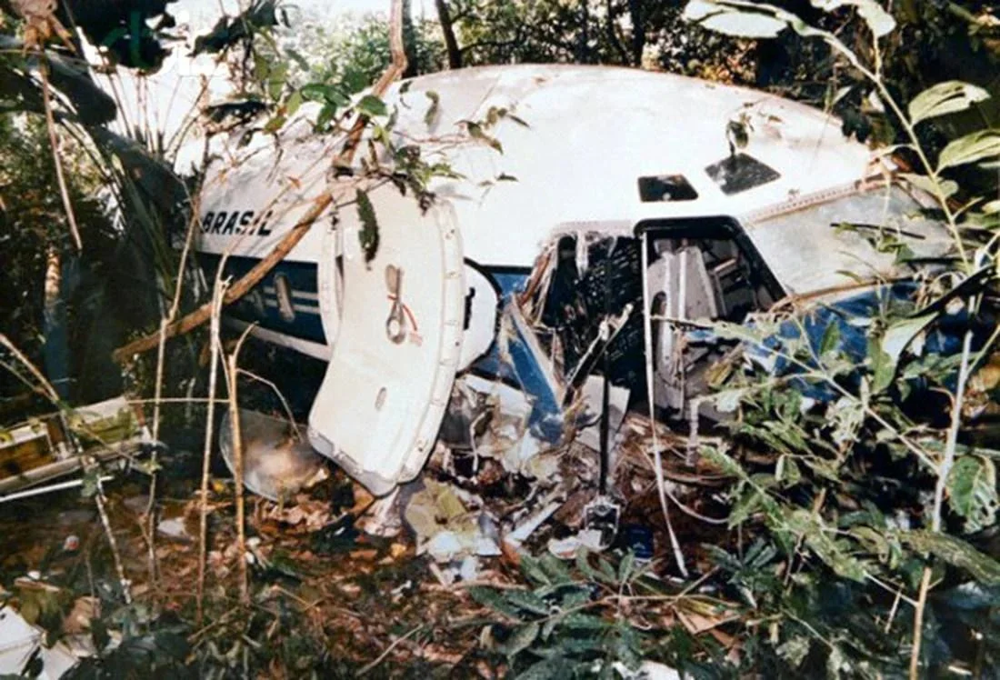

THE VARIG FLIGHT 254 CRASH
The Evening of September 3, 1989. A Boeing 737 was scheduled for a routine 45-minute "hop" between Marabá and Belém in Brazil. Before takeoff, the pilots looked at their computerized flight plan. The heading listed was "027." In previous versions of the software, this meant 27 degrees. However, the airline had updated its system to use a 360-degree decimal format. "027" now meant 270 degrees.
The tragedy occurred because the pilots, out of habit and lack of training on the new format, entered 270 into their horizontal situation indicator. Instead of flying North-Northeast toward their destination, they flew due West into the heart of the Amazon rainforest at sunset. For three hours, the pilots ignored the fact that the sun was setting directly in front of them (which shouldn't happen on a Northbound flight) and that their radio signals were fading. They suffered from Cognitive Tunneling, a psychological state where they became so fixated on their "correct" heading that they ignored all external sensory evidence that they were lost. When the plane eventually ran out of fuel, the pilot performed a miraculous "belly landing" into the jungle canopy in total darkness. 13 passengers died, but 41 survived the impact and the grueling days in the jungle that followed.

The Strategic Response: From Blame to User Interface (UI) Design The immediate strategy by the airline was Pilot Culpability, but investigators realized the flaw was systemic—a failure of the "Human-Machine Interface."
The Standardization Strategy: This crash forced a global aviation strategy shift toward the Standardization of Degrees. All flight plans were mandated to use four digits (e.g., 027.0) or specific notations to ensure a 243-degree error could never happen again due to a simple decimal misunderstanding.
The CRM Goal: It became a foundational case study for Crew Resource Management (CRM). The strategy moved away from the "Captain is King" mentality, training co-pilots and flight attendants to aggressively speak up when they notice environmental cues (like the sun being in the wrong place) that contradict the instruments.
The Search and Rescue (SAR) Pivot: Because the plane was hundreds of miles off course, the search strategy failed initially. This led to improvements in Emergency Locator Transmitter (ELT) satellite tracking, ensuring that even if a plane is lost, its "digital footprint" remains visible.
Key Facts
Date: September 3, 1989
Location: Amazon Rainforest (near São José do Xingu), Brazil
Casualties: 13 deaths; 41 survivors
Cause: Human Factors and Navigation Error (Incorrect heading entry of 270° instead of 027° due to a misinterpreted decimal format, leading to fuel exhaustion over the jungle)
Varig 254 is the ultimate warning about Data Literacy. It teaches us that a tragedy doesn't need a broken engine or a thunderstorm; it only needs a human being to trust a single "wrong number" over the reality of the horizon. It highlights the strategy of Sensory Cross-Checking never let the screen tell you something that your eyes know is impossible.